harmonic folds
a self-portrait of my musical genre journey since childhood
description: who are you? What are you made from? Where might you go? Your experience of the world is uniquely yours, and extends well beyond what shows up in a resume. What data is necessary to capture? What form should it take? How will you abstract that data — frame it, craft it, present it?
purpose: to collect, frame, abstract, and craft data toward the construction of an infographic of your own personal geography.
idea sketching
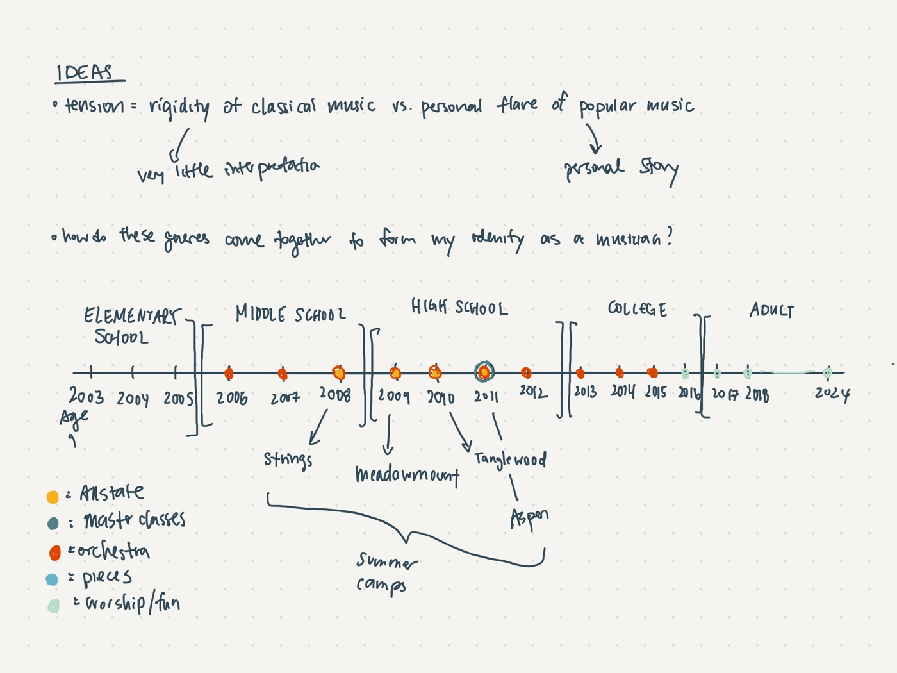
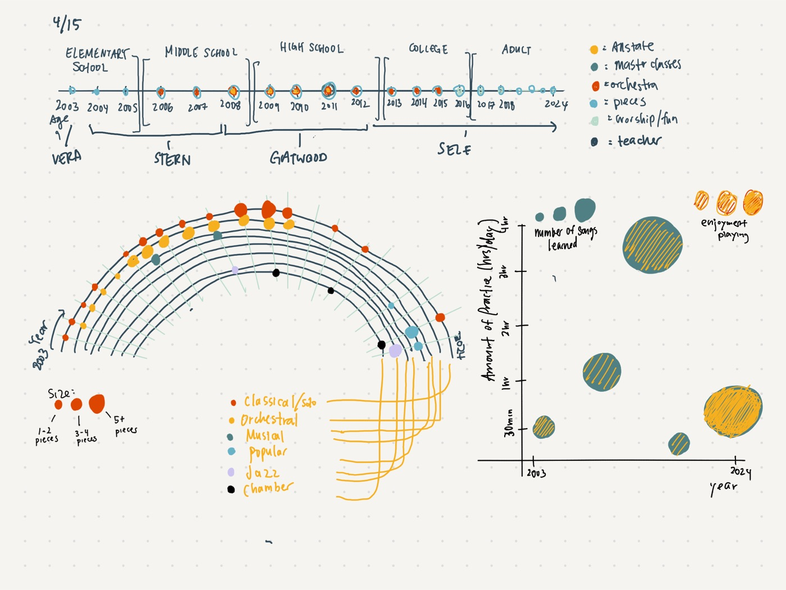
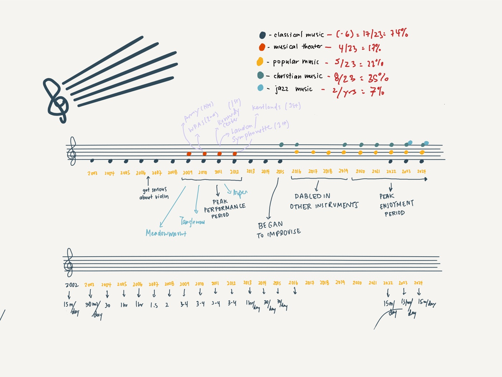
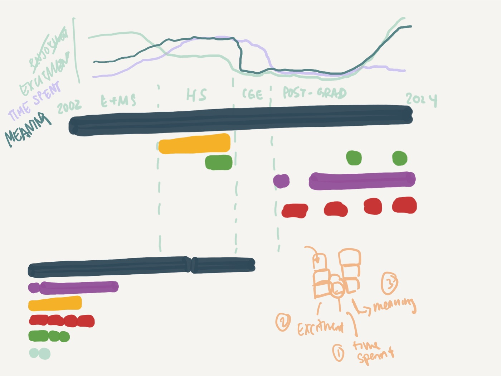
a few drafts
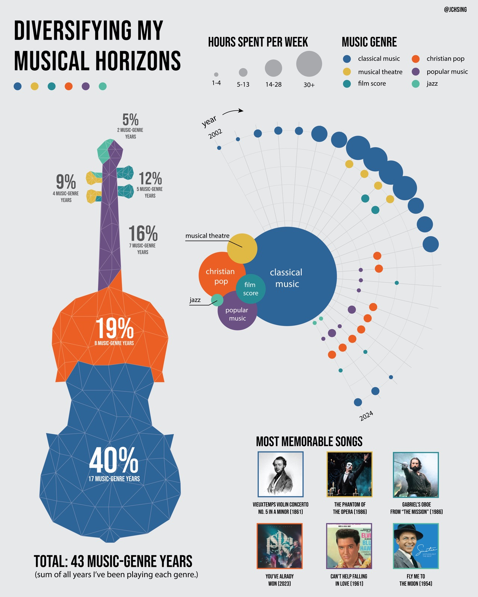
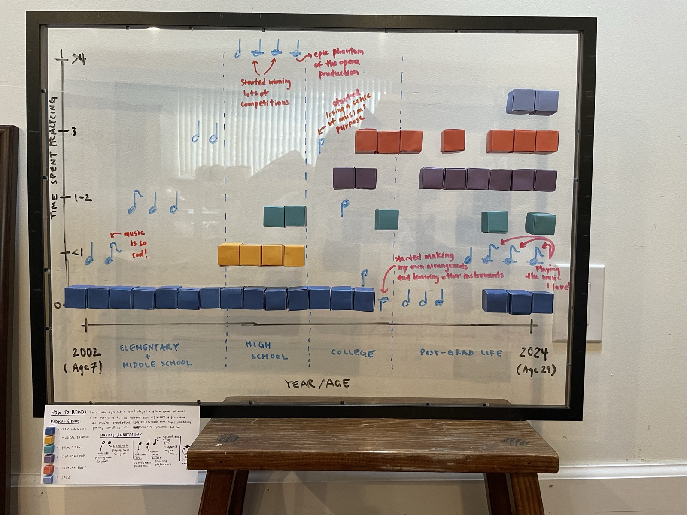
final version
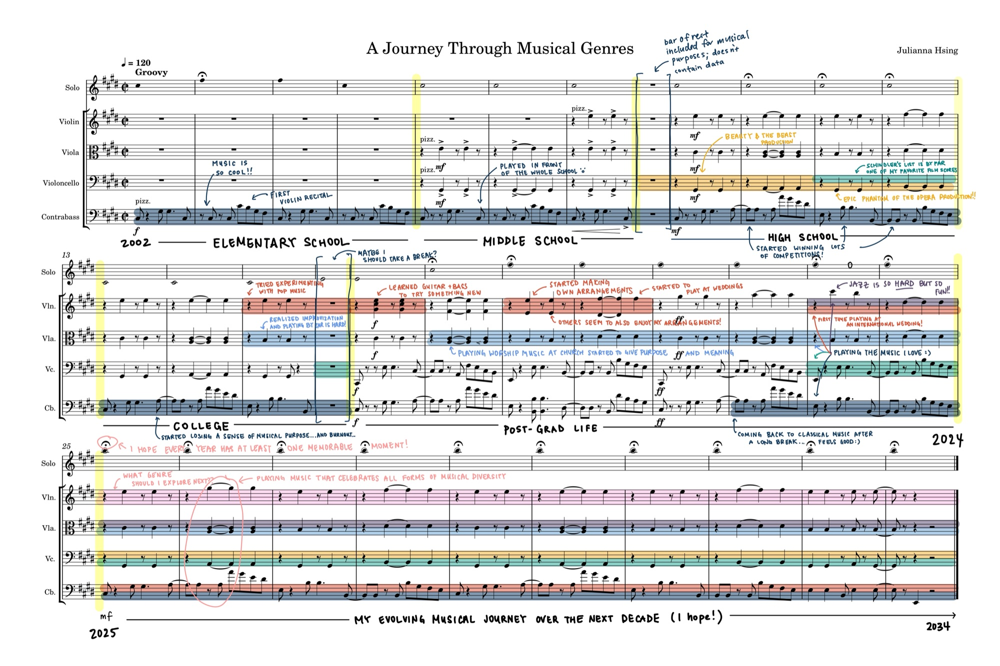
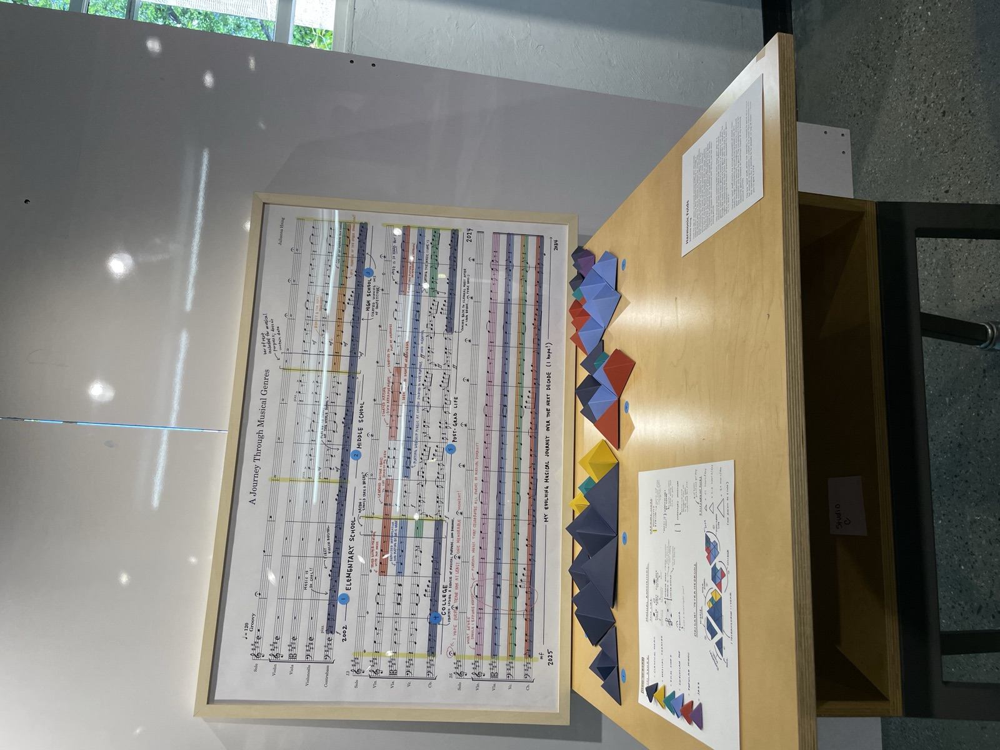
click play to hear what it sounds like!
Julianna Hsing · Harmonic Folds — A Journey Through Musical Genres
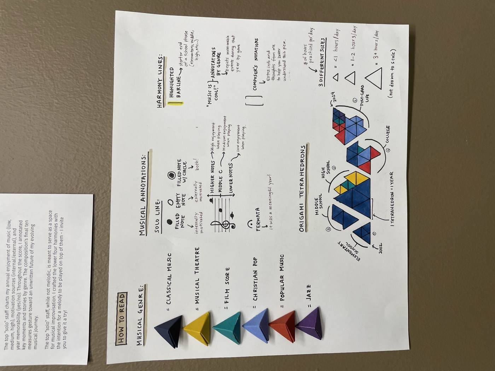
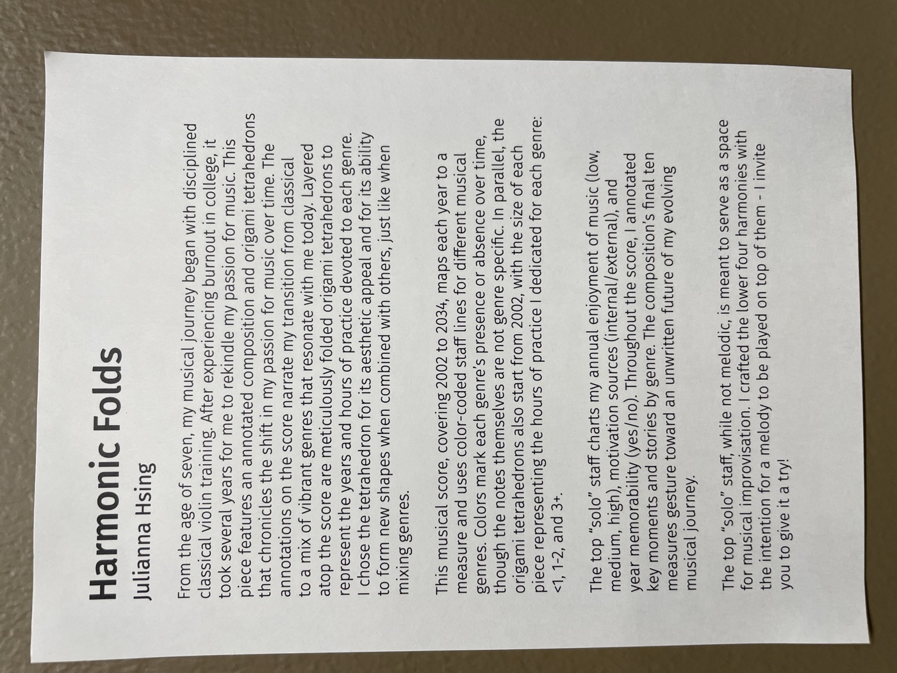
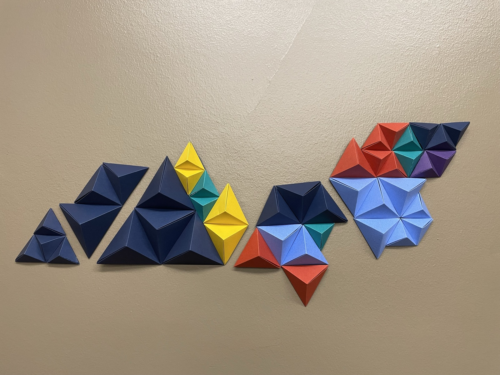
class exhibit
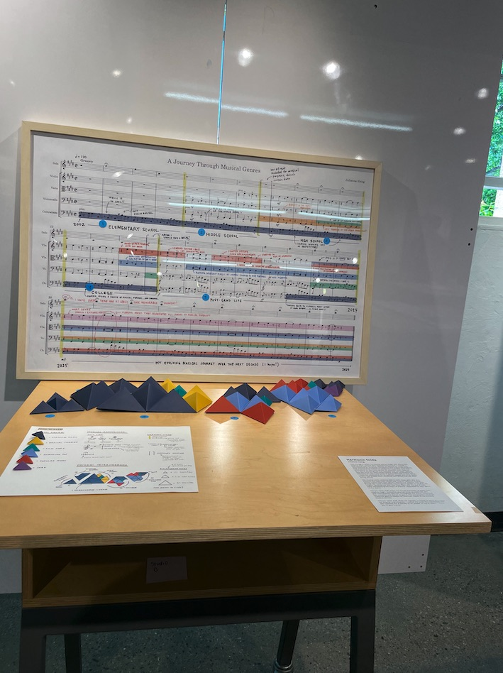